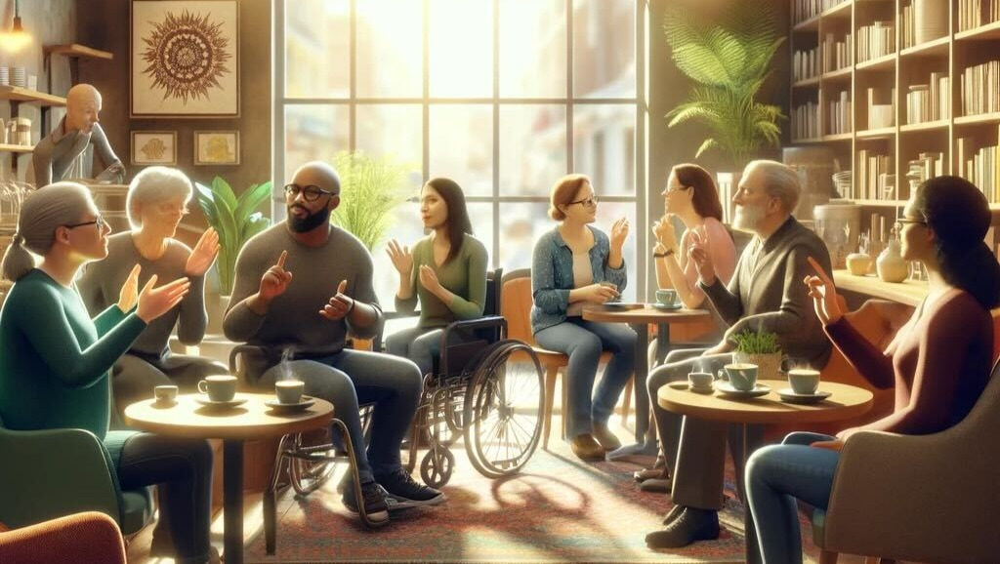
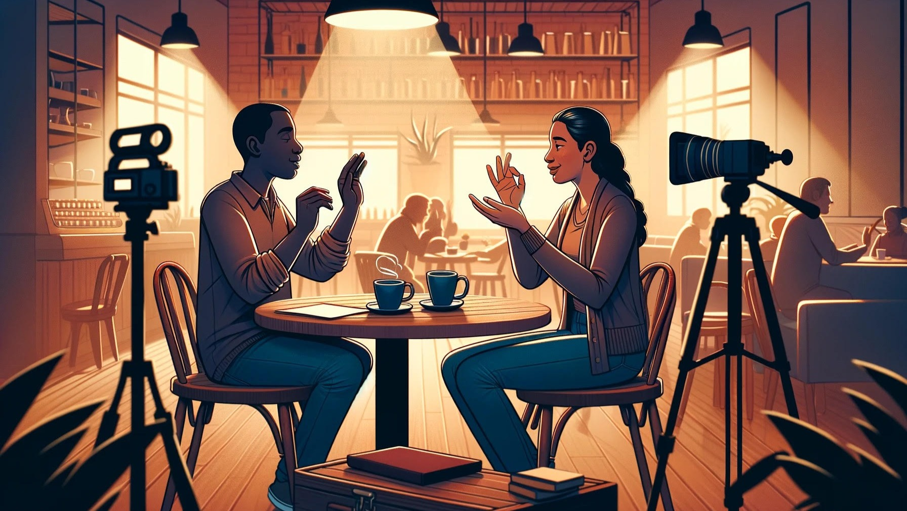

Welcome to CymaSpace’s new Sign Language Cafe – Where Communication Knows No Bounds!
CymaSpace is on a mission to create a unique space in the heart of Portland, Oregon, that goes beyond serving delicious coffee and scrumptious treats. Our dream is to establish the city’s first Sign Language Cafe, a haven for fostering connections between the deaf and hearing communities.
Why a Sign Language Cafe?
Imagine a place where conversations transcend language barriers, where the rich tapestry of sign language weaves together diverse stories and experiences. The Sign Language Cafe aims to be that place – a welcoming hub where deaf and hearing individuals can come together, share stories, and build friendships.
Our Vision:

Community Connection: The cafe will be a vibrant meeting point for deaf and hearing patrons alike, fostering a sense of unity and understanding within the community.
Safe Space: We envision a safe haven where deaf individuals feel empowered, valued, and respected, free from communication barriers that can be prevalent in traditional public spaces.
Cultural Celebration: Beyond coffee and pastries, the Sign Language Cafe will celebrate deaf culture, hosting events, workshops, and performances that showcase the beauty and diversity of sign language.
Why Your Support Matters:
To turn this vision into reality, we need your help. We’re seeking to raise $20,000 to cover startup costs, including sign language training for staff, accessibility features, and creating a warm, inclusive atmosphere. Your contribution will not only help us open the doors to the Sign Language Cafe but will also play a vital role in creating a more connected and understanding community.
How You Can Make a Difference:
✨ Donate! Every dollar brings us one step closer to our goal. Your generosity will directly contribute to making the Sign Language Cafe a reality.
✨ Help Spread the word! Share our campaign with your friends, family, and networks. The more people who know about our vision, the greater impact we can make.
✨ Follow Us! Stay updated on our progress by following us on Facebook and Instagram . Your support and encouragement mean the world to us.
How Your Donation Makes a Difference:
Accessibility Features: Your donation will help us install cutting-edge technology for better visual communication and accessibility.
Training Programs: Your donation will provide workshops for the hearing community to learn Sign Language, fostering an inclusive environment.
Café Setup: Your donation will help us design a warm and inviting space where everyone feels welcome.
Community Events: Your donation will help us host regular events that celebrate Deaf culture, promoting understanding and unity.
Perks of Being a Supporter:
Everyone who donates will be entered to win an incredible getaway package to Portland, which will include:
☺ A two-night stay at the Jupiter Next☺ $75 for lunch at the delectable Kachka Lavka☺ Four tickets to experience Hopscotch☺ $50 for dinner at Portland’s famous Nong’s Khao Man Gai
Your contribution, no matter the size, will make a lasting impact on our community.
Join Us in Building Bridges, Not Barriers

Join us in making the Sign Language Cafe a reality. Your support is not just an investment in a nonprofit business; it’s an investment in creating a more inclusive and connected community.
Thank you for being a part of this incredible journey. Together, we can build a space where communication knows no boundaries!
With gratitude,
-The CymaSpace Team